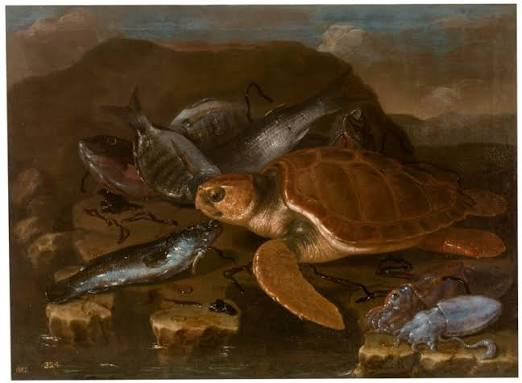

Prose
Only the Turtles

I’d list for you the things that changed about Shireen when our son was born but they’re outnumbered—blown away, really—by those that didn’t: her morality, first off. Her intolerance for cruelty. Her calves. She’d been a swimmer in college and the evidence of that persisted. But I’d say one new trait that appeared in the months after Aaron’s arrival was Shireen’s sparkling new panic gland. The woman I’d met traveling alone in Cambodia and who’d once enrolled in an underwater welding program couldn’t sleep for the first six months of Aaron’s life unless one of us was holding him. Nights we spent upright in bed, our son safely removed from smothery blankets and pillows. Now, old enough to flip himself over if need be, he slept between us in a donut-shaped cushion that looked like a dog bed.
But it wasn’t just our son, about whom it was essentially our job to worry—Shireen obsessed about things well beyond our capacity to control: was the tap water suffused with lead or bacteria? Is the plastic computer mouse leaching carcinogens into our hands? Is our sofa upholstery doing the same? Obsessed isn’t the right word. These fears didn’t consume her. But they were there. They hadn’t been before; now they were. She stashed sturdy shoes by our bed and boiled our drinking water. So when a friend showed her an article from a recent national periodical regarding a 9.0 earthquake lurking in our region’s near future that was, according to the writer, “a geologic certainty, as much a foregone conclusion as the erosion of sea cliffs into sand,” it pumped a few quarts more blood to Shireen’s panic gland. The article predicted annihilation of everything west of the interstate, an area in which we lived, but that would only be the beginning. After the quake would come the tsunami. More deaths. It went on in lurid detail, the writer relishing her role as soothsayer, having fun with it. Shireen stood in the kitchen holding Aaron and watching me as I read. I only made it halfway before pulling the cord. “A bit of overreaching, don’t you think?” I said.
No, Shireen didn’t think so. After reading the article, she did her own research. She phoned the National Guard and reached Lieutenant Colonel Byron Ingersoll in public relations, who divulged that they did in fact have an earthquake rehearsal program. It had a name. So, yes, they were aware of the quake’s potential. Prepare yourself, he said. When it hits, there will be those who prepared and those who didn’t. After, it will be too late to switch from one group to the other. Take action now, Ingersoll instructed.
“Five thousand deaths,” Shireen said to me as I spoon fed Aaron prunes from a jar. “But I think he gave me a low estimate.”
“You think the National Guard is hiding something?”
“No running water, no electricity, no roads. Think about it, Jon. It would be much worse than five thousand. It will be like living in 1850.” Shireen paused, tapping her chin thoughtfully, a longstanding habit. It was a small gesture that created continuity with the Shireen I’d always known, another in the long list of things that had not changed, which only seemed to underscore this single way in which she had.
“Maybe they don’t want us to freak out,” she was saying. “Maybe that’s why Ingersoll lied to me.”
“I don’t think he lied.”
None of the facts I mustered proved reassuring: our townhouse was situated 328 feet above sea level and anyway the tsunami would hit the coast, many miles away. The quake could be another hundred years off. Three hundred.
“What’s the use of worrying about that sort of thing?” I said. “How about traffic? Cholesterol? Teaching our son right from wrong?”
It no longer mattered. Shireen now had the voice of military authority.
*
I know that the earthquake is going to happen. I understand geology and plate tectonics and that nothing around here built before 2006 is constructed to any sort of appropriate code for an episode of that magnitude. Even without reading the article, which colorfully depicted all the bridges, power stations, and schools within the tsunami zone. And probably if it wasn’t for Shireen’s panic gland—if this were the only thing she was worrying about—I wouldn’t have put up a fuss. She wouldn’t have needed to find National Guard Lieutenant Colonel Byron Ingersoll in public relations because I would have said she was right. The smart thing to do is prepare. But I didn’t. The sleeping, the boiled tap water, the computer mouse. Grimacing at the sofa. Shoes by the bed. All of it. I wanted Shireen back. Some part of me figured that if I could downplay this latest fear, even while I knew it in many ways to be the most grounded, she might return, that the changes wrought by the birth of our son were not irrevocable.
So I argued that the earthquake was only a specter, a probability rather than an actual event. It was not like the wildfires or tornados that threaten other places; those things basically happen every year, and so it makes sense to plan for them. But we have limited resources—financial, emotional—there’s not an endless supply of these things, and so there’s a choice: do we address the things in front of us, the day to day, raise a good kid and so forth, or do we squirrel nuts away for a winter that may not come during our lifetime? Let everyone else panic and be manipulated by the military-emergency preparedness complex; we can carry on with our day-to-day.
There is no choice, Shireen responded. It’s simple: we do it all.
Soon after reading the article she had us in the grocery store compiling a home survival kit. With Aaron pumping his legs in the car seat that took up eighty percent of the cart space, gnawing at an old DVD remote, we surrounded him with cans. Sardines, pineapple, sliced pear, whole white potatoes, asparagus spears—things we’d never eaten canned, not once—plus LED flashlights, batteries, two first aid kits (one for the car), and beans. Five or six kinds, at least. As I leaned over the cart handle and made faces at Aaron, Shireen stood in front, slightly tugging on our cart with two fingers as she wandered up the aisle peering at the list in her other hand. “Oh,” she said. “We need water.”
“I got water.”
“When?” she said. “When did you do that?”
I reminded Shireen that I’d placed two large plastic jugs in our coat closet. I’d done this the week before, hoping it might be enough.
Shireen frowned. “Plastic? Nope, no good. Over time, plastic imparts endocrine disrupting chemicals into the water. It’s practically toxic.”
“It says BPA free.”
“That doesn’t matter. The alternatives used are also harmful.”
“Okay,” I said. “Okay, but water isn’t really something they put in kegs.” What I did next was puff my cheeks at Aaron, who responded by pumping his arms along with his legs.
“I wish you would take this seriously.”
“I am. I do,” I said, still puffing.
“You have a son now, you know. You’re a father.”
“Shireen,” I said. “I know about our son. I mean, this is him, right? Jesus, I bought the water. I stashed water for us. We’re here, aren’t we? I’m not fighting you on this.”
But I was fighting her. I was making it harder. I knew that. I just couldn’t stop.
“If you read the article, the full article, you would have known they make special water tanks, portable ones, for just this purpose.”
As we drifted up the aisle like that, we passed a woman in a motorized cart holding two kinds of barbecue sauce in her blue hands. Aaron launched his remote at her. It clacked off the cart, spat a battery, and skittered along the vinyl flooring. Apologizing to the woman, I bent to retrieve the remote but couldn’t find the ejected battery.
“It’s a goner,” the woman said. “Get used to it. My boys lost, ruined, or hid everything they touched until they went to school. Do you have any experience with cookout sauce?”
“Not really,” I said looking up from the floor. “No more than the next father.”
Shireen hates the term doomsday prepper. Past midnight and we were driving circles around the neighborhood. Aaron blabbered in his car seat, facing the rear window.
“You didn’t read the whole article,” Shireen said, also from the backseat, as I swung us around the same corner for the seventh time. “You should have read the whole thing.”
It was late. I’d worked a full day with another on tap in six hours and we’d eaten cold green beans and scrambled eggs for dinner. I’d never pegged you as a doomsday prepper. That’s what I said. I wanted to be sleeping and instead I was driving. I could have put it better. I could have said, Look, Shireen, I get it. I love this little thing that’s come into our lives in a way that makes me think I’ve probably never loved anything before. I can’t stop hugging him, kissing him. He’s my son. I totally and completely get it. But that’s not what I said.
In the rearview, I watched Shireen pull her coat tighter against her kitty pajamas. She peered out the side window and told me that no, in fact she was a pragmatist and that I was the one frolicking in fantasy land, pretending bad things would never happen.
“Frolicking?” I said. “Look at me. Look at what we’re doing now.”
She explained how her grandparents had canned their own food. Her great-grandparents had done the same thing. Self-sufficiency, she called it. Be prepared.
“You sound like Ingersoll.”
We drove on without speaking. At some point Aaron’s blabbering cut out.
“Is he sleeping?” I said. “Are we safe to go back, you think?”
Shireen peered at me in the rearview. “Fantasy land,” she said.
Saturday morning I was hauled from sleep by the downstairs squealing of Aaron in his jumper. The donut pillow in the middle of our bed was empty. Then I noticed Shireen was gone as well. We took turns sleeping in. I listened, but I didn’t hear her downstairs with Aaron. It sounded like he was alone, squealing and jumping. I remained in bed blinking at the water stain in the ceiling, the one that looks like the island near Canada where Shireen and I spent our honeymoon, and I listened to my jumping son. Boy did he squeal. Even muffled by floors and walls I could hear it as if I were right there. As I listened to him jumping and squealing another sound emerged. A heavy skidding followed by a thump. Skid. Thump. Skiiiiiiiid. Thump.
Seeing me come down the stairs, Aaron paused his squealing for two or three seconds before starting up again. When I lifted him he closed-fist smacked me in the mouth. We found Shireen in the living room with her ear to the wall behind our TV, tapping with two fingers. She’d maneuvered all our furniture into the middle of the room. “Do you know where the studs are?” she said. “We need to anchor everything. Like, all this stuff.”
Shireen spent the rest of the morning on the phone vetting out-of-state emergency contacts, another one of Ingersoll’s tips, while I watched Aaron pump his arms and legs in the air from his play mat, like a back-turned beetle, and dangled colorful stuffed things in his face. Shireen eventually settled on my mother, who lives near Philadelphia, as our out-of-state contact. Shireen’s parents live in a wealthy district of Tehran, too far out of state, I gathered. Around us, it was as if an unseen explosion had already hit and scattered colorful blankets and rattling, grabbable toys. Much of what had been there before Aaron was gone now or obscured by explosion debris. Where there’d been a wine fridge there was now a glider with green cushions. Where a collection of glass decanters on top of our hip-high bookshelf had reflected sunlight from the window there was now a Sterilite bin of toys and lovies. Gone also was the three-foot figurine of Marilyn Monroe that I’d had since my twenties (a corner of Marilyn’s blown skirt was at eyeball height to a crawling baby) and in its place sat the bouncing exercise ball we used to lull Aaron to sleep, as a first line of defense before the car.
While Shireen reviewed emergency protocol with my mother, I tried enticing Aaron to crawl using a string of Cheerios, like he was a cartoon animal. But he only picked up the few he could reach and then remained on all fours grinning at me and occasionally pumping his butt back and forth. To provide a bit of momentum, I nudged him gently from behind and he plunged face first onto the faux wood vinyl and wailed like his legs were coming off.
“What happened?” Shireen rushed in from the kitchen, still holding the phone. I could hear my mother’s tiny voice saying the same thing.
Sunday I again wake to a sound from Aaron. This time he’s wailing two inches from my face. Shireen is gone again—from the house this time. Feeding Aaron his bottle breakfast in the kitchen, I learn, from a note by the drying bottles, that Shireen has gone to acquire a ham radio license. “Mommy’s off her rocker,” I tell Aaron.
When I bring him to the shared courtyard to drink his breakfast in the elements, one of our neighbors, Mike Mariosworth, waves from a desiccated, unstained Adirondack chair that predates anyone currently living in the complex, stroking a small turtle like a Persian cat. Aaron squeals around the plastic nipple, dribbling milk onto my arm.
The thing about our neighbor Mike is that he’s in his twenties and raises turtles. The one in his lap doesn’t move, except once or twice a minute to lift its head a quarter inch and then put it back down again. Aaron is fixated. There’s a turtle in his first words book, only it’s called a terrapin. Mike’s lap turtle’s name is Maurice. Maurice the turtle.
We take the other Adirondack chair and I lean back so the sun hits my closed eyelids. Aaron settles against me and wraps his hands around the bottle. He can’t fully hold it himself yet, but he likes to participate in his own feedings.
“You want to say hello to the little turtle-oo?” Mike babytalks to Aaron.
“Don’t do that,” I say. “You can talk to him normal.”
“Sorry, I don’t spend much time with kids. The closest I get is these turtles.”
“Is that how you talk to them?”
“It is. Pretty much, yeah.”
On the day Shireen and I moved into the townhouse, our first shared residence, Mike had opened his front door to greet us. He wore running shorts and a Smith College Track & Field t-shirt.
“That’s a girl’s school, isn’t it?” I said as we shook hands.
“I got the shirt from a girl,” he said, issuing the kind of coat-hanger smile that meant he’d probably run for public office someday. He helped us carry boxes and at one point, through the open door of Mike’s place, a partially orange turtle the size of a bisected coffee can emerged, looking like it wanted to make a very slow escape.
“Get back in the house!” Mike shouted at the turtle, holding a box of our kitchen wares.
I watched to see if the turtle would respond to his command but it just crouched there.
“That’s Beth Ann,” Mike said, carrying our box into the house. “She’s a bit of a tart.”
“That’s cute,” Shireen said, balancing a floor lamp against her shoulder. “You have a pet turtle.”
“Actually, I have about thirteen in here with me now.”
“Thirteen turtles?” I said.
“It’s nothing. I’ve had as many as fifty.”
Later, as the three of us stood in the living room of our new place drinking wine from coffee mugs amidst half-unpacked boxes, our new neighbor explained that he’d gone to school to study veterinary medicine, then switched to nutrition—“people nutrition,” he specified—before transferring to a different school in a different state and majoring in philosophy. “Turtle breeding came later,” he said. “I run on online turtle forum—The Turtle Pub—from which, among other things, I sell the turtles I breed.”
“Is it lucrative?” I said. “I don’t mean to be crass, but is there any money in it?”
“I also sell drugs,” he said.
Shireen and I laughed—I think I even spit some wine into my coffee mug—but our new neighbor straight-eyed us.
That night Shireen and I lay in bed and joked about what Mike’s unit must look like, on the other side of our shared wall. Just like ours, only inside his, thirteen to fifty turtles peer at one another, metabolisms slugging along, sliding into water or perched on some small rock under a heat lamp. Mike told us he valued testudines, as he called them, because they’d been around a long, long time and had seen everything, ice ages and the opposite. “They’ll outlast us all,” he explained. “I mean, all of everyone, everywhere.”
For a while, Shireen and I amused ourselves with elaborate stories about Mike’s turtles, especially Beth Ann. How she’d escaped from a violent pond when she was a teenager but managed to keep from slipping into the dirty world of turtle gangs based on her savage wit and an un-hoodwinkable face.
Once Aaron arrived, we mostly stopped wondering about Mike’s turtles.
In my lap I feel the rippling of baby gas and Aaron laughs. I don’t know if the two things are connected, but it makes me smile. Being farted on by your infant son is a joy I wouldn't have predicted for myself, but it’s a real one, as real as any I’ve experienced before.
Mike hands me a beer from a cooler near his chair and tells me he saw Shireen this morning. They spoke in the driveway, briefly. “Listen, I think she’s being smart with this whole thing. When the big one hits, what do you think happens to all our major modes of communication? Only the hams will be left. They’ll be our saviors. Shireen will be one of our saviors.”
I’d never heard Mike discuss the impending earthquake. Although, we didn’t spend much time together, so I couldn’t quite say if it was out of character or not. Aaron had finished his bottle and was now smearing the milky nipple on his cheek. Mike kept speaking.
“I hope the big one hits soon. I hope I’m around to see that shit go down—excuse me, kiddo. It’s going to be quite a scene. Imagine all the homeless honeys running around looking for shelter. All those ham babes with their radios. The end of the world is going to be a sure fire F-U-C-K fest. Even the turtles will, you know, uk-fay.” Mike holds Maurice and inspects his undercarriage. “Don’t get too jacked up about it, Maurice. No telling when it will happen and you might be past your turtle-boning days when it does.”
Aaron claps and Mike gives him a thumbs up. I hold onto my son’s thighs, keeping him rooted to my lap. He squirms and I know if I let go he’ll lunge himself off my legs and fall, smashing his head on the flatstones. And I don’t mean he would just slip off; Aaron would willingly, intentionally throw himself from me, if he could. The kid possesses no inborn fear of personal injury. Maybe we’re all like that when we first arrive. Presented with open air—the sofa edge, a lap—we jerk free, trying to fly. A human baby is not simply unself-sufficient but downright self-destructive, with only its parents in place as guard rails to keep it alive. Or maybe Aaron’s fearlessness came from Shireen. Maybe he’d taken it when he left, made it his, leaving space enough behind for a panic gland to grow.
I let Aaron tip a few degrees before I bring him back, let him dangle and feel the pull of gravity on his bones. Maybe, if we do our jobs right, he’ll grow up to trust his own body.
Shireen returns in the afternoon balancing a stack of schematic drawings, topo maps, and two full bags of pumped breast milk—which she hands to me for placement in the freezer—and swoops right past Aaron wailing in my arms, heading instead to the dining room table where she begins unrolling the maps. “Do we have anything to hold these down?” she said.
“What happened to getting a radio license?”
“I got it.”
“You’ve been gone all banana day.”
“The county offices are a maze,” Shireen says, using the plate from my lunch and her pump bag to hold down the map. Aaron, wailing, reaches for her. “Give him here,” Shireen says, squeezing a breast. “These things are killing me. Come here, Angel Face.”
While she nurses Aaron on the couch, Shireen says, “Why didn’t you defrost a bag from the freezer? That’s what they’re there for.”
“You said you’d be home hours ago.”
“There were plenty of freezer bags.”
“I defrosted a banana bag.”
“Okay, well, good. Look at this stuff. Some of the guys down at the radio club suggested I acquire a few maps to aid in rescue ops. When the power goes, no GPS. Smart, huh? After the quake, we’ll be able to relay survivors’ positions to the proper authorities and the maps will help us get to people the old fashion way, especially those cut off from main arteries, which may themselves no longer be operational. I told you, these radio guys are smart.”
“Shireen, a call would have been nice. A banana text.”
Shireen tickles Aaron’s cheek and he pumps his legs, sucking noisily.
“Is daddy being a poop? Tell me, is daddy being a big fat poop?”
“Don’t do that. I banana hate when you do that.”
Shireen looks up at me. “Are you drunk?”
“I had a few beers with Mike.”
“You’re drunk? You’re banana drunk?”
“I’m not banana drunk, okay? I had a few banana beers with our banana neighbor, that’s all.”
“I’m not sure it’s a good idea to have beers with our neighbor when you’re supposed to be watching our son. Do you think daddy should be boozing when he’s supposed to be watching you? Do you, little Aaron face?”
“Shireen.”
“Take a look at that map, the large one. I think your elevation number was off. We’re more like two hundred feet above sea level.”
“Shireen.”
“Take a look, big poop.”
“Shireen. Banana stop that.”
“It’s less than what you said.”
“So? What’s going on here, Shireen? You’re panicking.”
But I knew it wasn’t panic. Whatever this was, this newest version of Shireen was in fact more like the previous one: decisive, determined, brave. What she was imagining now was a situation in which we, or at least she, survives the quake and helps rebuild, which, rather than fear, cowering, or hysteria, is an assumption of strength. So why couldn’t I get on board?
I started to explain to Shireen how I thought we should set a calm example for our child, even at his young age, help calibrate his inner gyroscope. But it all jumbled in my head and came out as: “Shireen, rescue ops? Don’t be banana fucking ridiculous.”
*
In every marriage I imagine there are moments where what’s needed is the issuance of an apology. Like a haze in the air that nags at skin and keeps both parties in a state of anxiety until the apology is released and the haze can dissipate. Were there an instrument to measure such a haze, it would have been fluttering at the high end in our home the following day. Mondays I head to the shop and Shireen stays home with Aaron. I could not get the apology out before leaving. The haze was gone when I returned at the end of the day, but only because Shireen and Aaron were gone, too, at a Gymboree music class. With the dissipation of the haze comes an urge to rectify, which, in this case, takes the form of a will to complete the furniture anchoring job, which, by the presence of some molly bolts on the counter, I can tell Shireen had attempted to complete herself during the day, although she must have been interrupted by the demands of our son. This is when I hear a car honk in the shared drive and then Mike calls my name from below.
Outside, I see him smile through the windshield. There is a girl in the passenger seat. She looks to be, like Mike, somewhere in her twenties.
“Jon, this is Hazel,” Mike says through the rolled-down window.
“Ha-zel,” she corrects.”
“Yes, sorry. Of course, this is Hazel. The wonderful Hazel of Burien. We’ve just come from the turtle sanctuary.”
The girl’s expression is a mix of politeness and boredom. In her lap she cradles a baby turtle.
“I didn’t see your car out front,” Mike says. “Shireen go surveying escape routes or something?”
When I explain where they are, Mike nods as if the answer is exactly what he’d expected me to say and it occurs to me that he is performing for the girl. The premise: here is my friendly neighbor who has a wife and kid and we’re all a team here in this townhouse complex.
“I need to do some things to the furniture,” I say. “You know. Make preparations.”
Mike appears to not appreciate my response. Hazel is not paying attention to us, instead focusing on the turtle in her lap, and Mike works me with an expression that says he’d appreciate a bit of neighborly wingmanship.
“Well, look,” he says. “The big one probably won’t hit in the next twenty minutes or so. Why don’t you come inside and say hello to my turtles. You can explain to Hazel here why it’s not as strange a business as it sounds.”
Despite all our previous jokes, this was my first time inside his apartment. The first thing that becomes apparent is that it smells like an underwater locker room. The second thing is all the humming and filtering sounds. There are tanks everywhere, on the floor and on the tables and some in the windowsills, all humming and burbling and emitting a blue-green light that, together with the sounds of the place, make it feel just as much as smell underwater. A quick scan suggests upwards of thirty turtles moving very, very slowly all around.
“Holy shit,” Hazel says. “So, you weren’t kidding.”
Mike busies himself with checking the tanks, inspecting gauges and pumps, cooing to the turtles, a few of whom offer almost imperceptibly testudineous nods of recognition.
Hazel and I watch Mike move around the room. His place is all glass and water, nothing bolted anywhere, numerous sharp edges.
“Let’s hope he’s right,” I say to Hazel. “You know, about the earthquake being more than twenty minutes off. This place is a deathtrap.”
“Oh, the turtles would be fine,” Hazel says. “They have hard shells and survival instincts.”
“But us, I mean.”
It occurs to me then that having a child may have dulled my interest in all other creatures. There Hazel was thinking about the turtles while their lives hadn’t even registered with me as at risk. Instead, I’d been imagining Aaron growing up in a broken world with no father, blaming me for not acting, not taking the right precautions, being where I shouldn’t be. His mother, the hero, had contributed to the community’s successful emergence from disaster, while his father, that degenerate, had been buried in a glassy, watery tomb.
When Mike is satisfied that all his tanks are in good working order and his turtles fed and attended to, he joins Hazel and I in the kitchen, where we’d settled because it smelled somewhat less like an under-code aquarium.
“Bit different from your place,” Mike says, grabbing three beers from the fridge.
“Kids have a lot of shit, don’t they?” Hazel says.
“Banana.”
“Huh?”
“My wife and I substitute ‘banana’ for curse words when Aaron’s around.”
“He’s not around.”
Hazel takes a rather large swig from her can and a beer trickle runs from her mouth, which she wipes away with the back of her hand. “You should be cursing up a storm,” she says. “You should be making up new curse words just to get them off your chest. My parents never cursed in front of me and look what happened.”
“What happened?”
“You sound like my shrink,” she says.
“Jon,” Mike says, offering his vote-for-me smile. “Tell Hazel what your wife has been up to. Hazel do you know about the Cascadia quake?”
While I recount recent events on our side of the wall, a certain goblin sneaks around in my thoughts, disturbing items I’m attempting to organize as coherent, neighborly speech. This goblin points out that I am standing in a strange kitchen with people I hardly know in place of the two I love most. Unconcerned with resolution or amelioration, the goblin offers no answer, no reassurance. His nature is only to stick fingers in pie, spit in the water, unbolt what’s been fastened for safety. Soon Shireen and Aaron will return and she’ll see I’ve once again been drinking beers with the neighbor. But this is a small destruction that I’ll have an opportunity to recover from, do better next time, make amends. Imagining those molly bolts on the counter, how I’ve allowed, willingly, good intentions to be derailed, with the confidence that such a choice will not be my last. The goblin shrugs. Your awareness of mortality plays tug-of-war with your need to ignore, the goblin says, yawning, tipping over another filled glass.
I am aware that I am speaking in Mike’s kitchen, that Hazel is listening, that I am helping things here. We control what we can, whatever it is, because it will always be dwarfed by what we can’t. In two days or a thousand years, this all comes crumbling down. Of course you know. Only the turtles get away safely.
Originally from the east coast, Greg November is a Seattle-based writer, community college instructor, and formerly a senior submissions reader for New England Review. In recent years, he’s been the recipient of a fellowship from the Jack Straw Cultural Center, nominated for Best of the Net, and a finalist in fiction contests from Black Lawrence Press, Fractured Lit, december, and The Missouri Review.